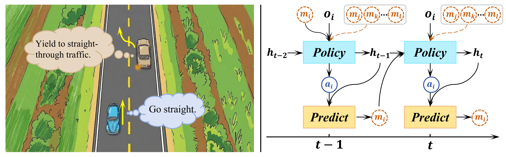
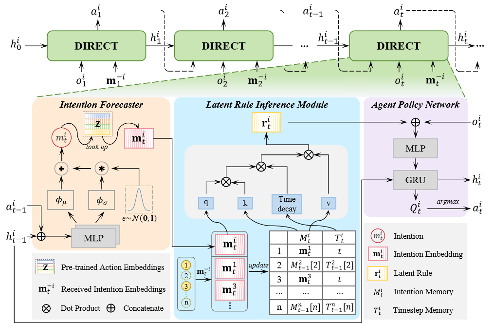
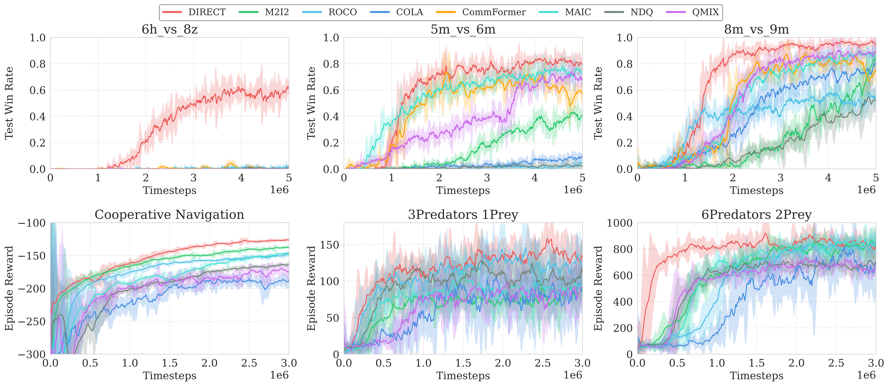
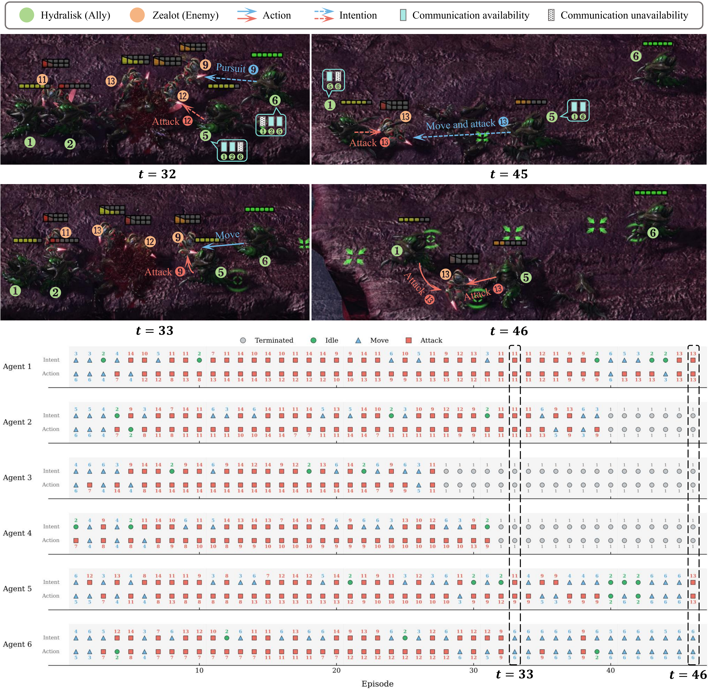
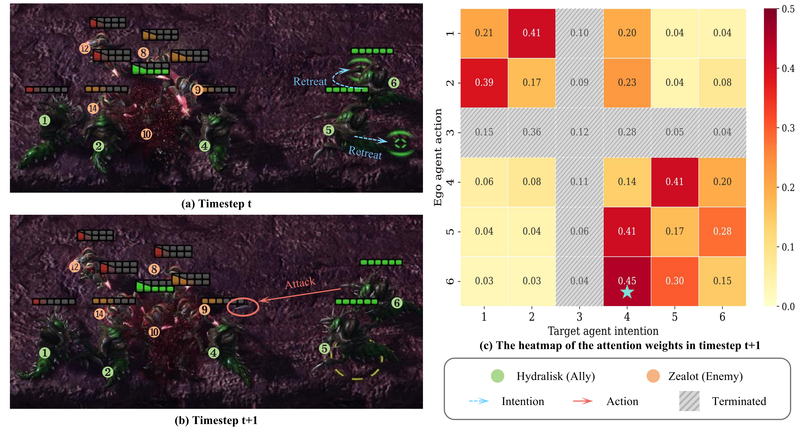
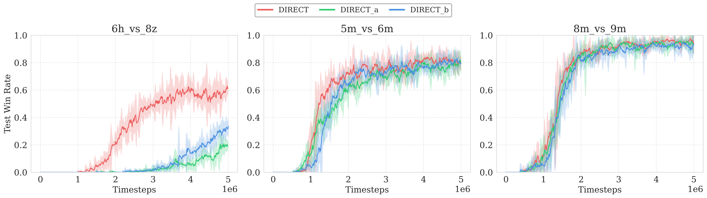
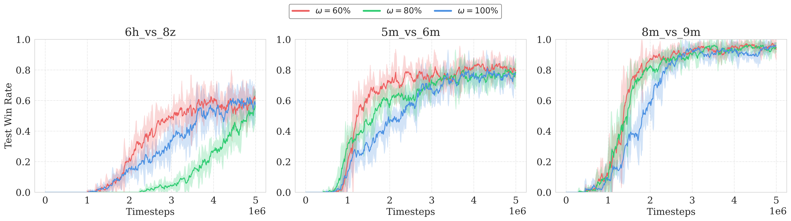
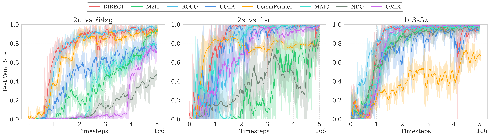
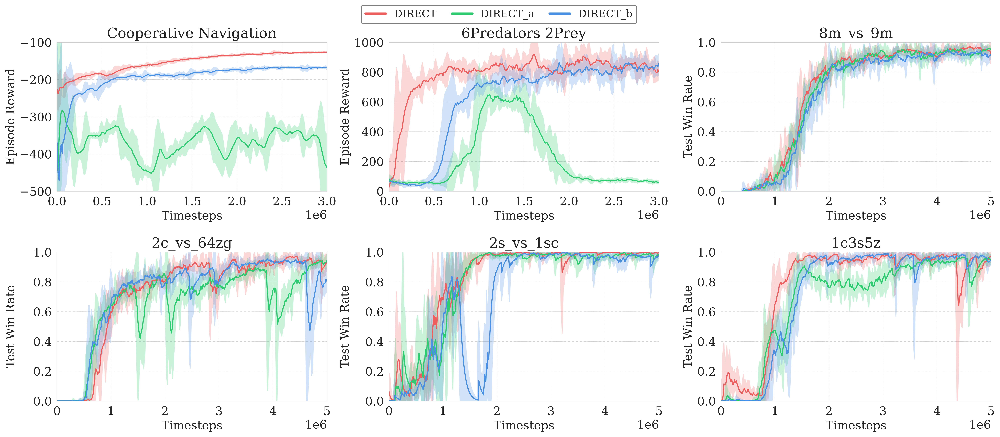
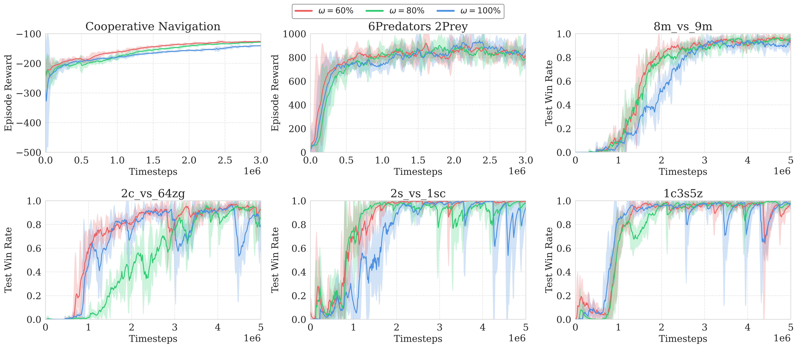

DIRECT: Decentralized Intention and Latent Rule-Emergent for Multi-Agent Cooperation under Intermittent Communication
Submission with ID:1595
Demonstrations
Video Demonstration 1
Video Demonstration 2
Abstract
Most of the existing decentralized multi-agent systems facilitate coordination by achieving consensus. However, reaching global consensus among a large number of agents in complex settings is challenging because resolving a local disagreement often triggers cascading adjustments across the system. This problem is further exacerbated under intermittent communication. In the field of transportation, human drivers usually rely on intentions (e.g., turn signals) in conjunction with traffic rules (such as ``yielding to through traffic") to achieve efficient cooperation, instead of establishing consensus with all surrounding vehicles. Inspired by this observation, we propose the Intention $\otimes$ Latent Rule paradigm to facilitate coordination beyond consensus, which is instantiated by DIRECT (Decentralized Intention and Latent Rule-Emergent CooperaTion). Within this framework, agents forecast their intentions based on current actions, and the latent rule inference module infers a latent rule from available information to modulate competing intentions, enabling cooperative action selection even when communication is disrupted. Extensive experiments on challenging StarCraft II micromanagement and Multi-Agent Particle Environments demonstrate that DIRECT consistently outperforms state-of-the-art methods, achieving more robust coordination across a range of communication-degraded scenarios. Our code is available at https://anonymous.4open.science/r/DIRECT-master-F0BD.

An example of conflict resolution via latent rules. Left: A potential collision risk arises as the red vehicle intends to turn left while the blue vehicle proceeds straight, creating intersecting trajectories. Right: Adhering to the standard traffic rule ("left-turn yields to straight"), the turning vehicle yields to the straight-moving one.

Overview of the proposed DIRECT framework. The top panel illustrates the recurrent information flow across timesteps, while the bottom panel details the computation at timestep $t$ under the Intention $\otimes$ Latent Rule formulation. Specifically, the Intention Forecaster predicts an intention representation $\mathbf{m}_t^i$ for each agent based on its recent action $a_{t-1}^i$. To handle communication volatility, the Latent Rule Inference Module maintains an episodic memory ($M^i_t, T^i_t$) and employs a time-decay gating mechanism to synthesize a latent rule $e_t^i$ from partial neighborhood signals. Finally, the Agent Policy Network conditions the local policy based on this latent rule-derived guidance, enabling decentralized coordination.

Performance comparison between DIRECT and baselines on the SMAC and MPE benchmarks.

Case study from an episode of the SMAC 6h_vs_8z scenario. Two representative timesteps ($t=33$ and $t=46$) are shown to illustrate how action-grounded intention communication shapes decentralized coordination. At $t=33$, an intention derived from a pursuit intention provides a reliable behavioral cue that influences a teammate’s target selection in the subsequent step. At $t=46$, consistent intentions communicated across agents give rise to an implicit coordination pattern, resulting in a synchronized engagement against the same opponent. This example demonstrates how intentions grounded in executed actions serve as stable coordination signals and guide local decision-making under intermittent connectivity.

Intention conflict resolution via latent rule emergence in the SMAC 6h_vs_8z scenario. (a–b) Consecutive timesteps showing conflicting intentions at $t$ and coordinated action adjustment at $t+1$. (c) Attention weight heatmap at $t+1$, illustrating how agents selectively attend to teammates’ intentions when resolving conflicts.

Ablation study on the core components of DIRECT. DIRECT_a removes the pretrained action encoder in Intention Forecaster, eliminating the action-grounded intention representation. DIRECT_b removes the Latent Rule Inference Module, directly using communicated intentions for action selection without latent rule emergence.

Ablation study evaluating DIRECT performance under varying levels of information loss conducted on the SMAC and MPE benchmarks.

Additional performance comparisons of DIRECT on SMAC benchmark scenarios.

Supplementary ablation results on additional SMAC and MPE scenarios. This figure extends the ablation analysis in the main text by evaluating DIRECT and its variants (DIRECT_a, DIRECT_b) on additional environments.
